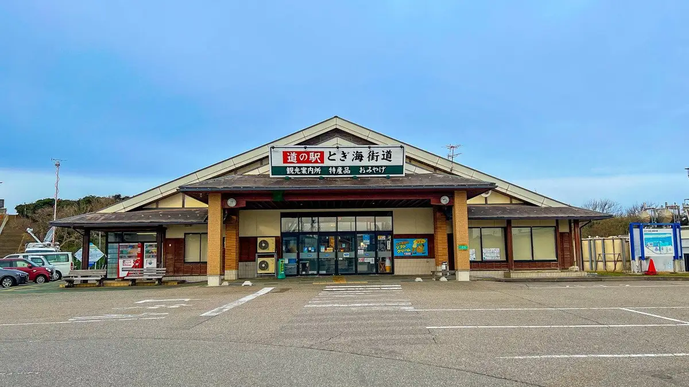
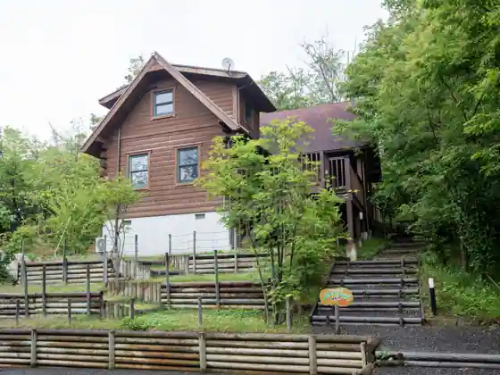
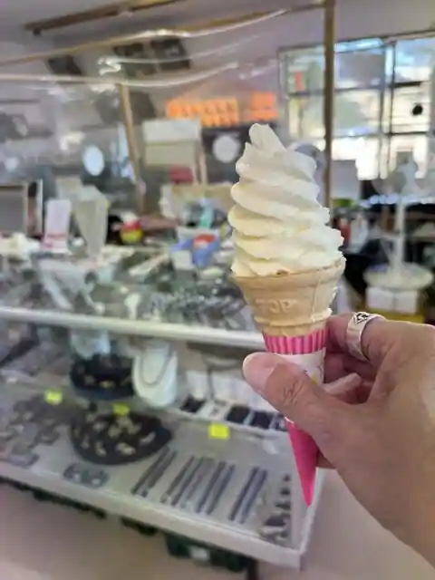
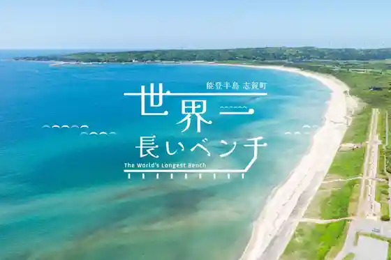

Japan / Ishikawa / Shika
Shika · Ishikawa
Shika
Highlighted on the Ishikawa map.

Shika Town Hall



Sights · Things to do · Places to eat · Places to stay · Day-to-day services
Nearby in Ishikawa: ← Noto · Suzu →
Other towns: Anamizu · Hakui · Hakusan · Hodatsushimizu · Kaga · Kahoku · Kanazawa · Kawakita · Komatsu · Nakanoto · Nanao · Nomi · Nonoichi · Noto · Suzu · Tsubata · Uchinada · Wajima
All towns in Ishikawa · Back to all prefectures